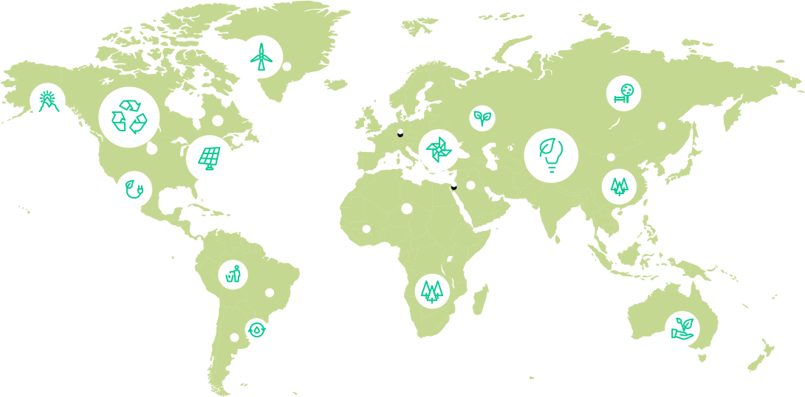
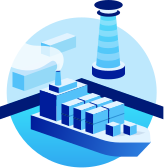

Sustainability on Demand
Helping the World Go Carbon Neutral
Our Sustainability-as-a-Service platform calculates and purchases carbon offsets to neutralize the environmental impact of everyday activities like ecommerce deliveries, ridesharing, flights, and more.
Cloverly API
Offset Your Carbon Footprint in Real Time
Cloverly's powerful API calculates the impact of common carbon-intensive activities in real time and uses verified, quality carbon offset projects to neutralize them. Ready to get started? Create an account to integrate the Cloverly API for free, or contact us for custom solutions.
How It Works
Connecting the Carbon Offset Infrastructure for a More Sustainable World
Businesses and consumers count on Cloverly to offset their carbon footprint and create positive environmental change based on real-time business activities. Whether you implement our ready-to-use applications or install our API as part of a custom integration, Cloverly can help you go greener, faster.
Learn More-

Matching the Offset
The Cloverly API can find and match the best offset per transaction. If your customer orders a product in California, for example, we might partner with an improved forest management project in California to keep the benefit local.
-
Transaction Transparency
We believe in transparency and fully validated transactions. That's why every time you (or your customers) choose to offset an emission-producing activity with Cloverly, we provide real-time transactional data to show the location, type, and amount of carbon offset.
-

Verified Sources
To effectively neutralize carbon emissions, we know that quality matters. That's why Cloverly works with reputable, internationally recognized suppliers who track and verify registered carbon offset projects.
Use Cases
Used in Every Environment, to Save the Environment
There are many sources of carbon emissions, including some that we don't typically associate with environmental impacts. For example, even cloud computing requires physical servers powered by electricity. Below are a few common use cases for carbon offsetting.
-

Ecommerce
See how Cloverly partners are offsetting ecommerce shipments through Shopify, BigCommerce, Magento, and custom integrations.
Learn more -
Rideshare
Miles traveled and carbon emitted can be easily calculated and offset in real time with Cloverly.
Learn more -
Flights
Take off the carbon impact of aviation. With the Cloverly API, calculate and offset miles flown and impact generated.
Learn more -
Enterprise Resource Planning
Learn how enterprise software companies are using the Cloverly integration to offset their environmental effects.
Learn more -

Energy
Find out how the energy industry is using carbon offsets to make a difference and create a more sustainable world.
Learn more -
Supply Chain
Calculate offsets based on your supply chain, make a difference, and see how others are doing it, too.
Learn more -
Fintech
Cloverly can help identify carbon footprints based on financial transaction data and purchase the offsets needed to mitigate these effects.
Learn more -

Fleet
You track mileage and fuel economy for your vehicle fleet. So you already have the data the Cloverly API needs to calculate and offset the carbon impact.
Learn more
Don't See Your Industry?
Cloverly can accommodate a variety of use cases for many different carbon-producing activities. Even if you don't see your industry here or you're not sure what activities to offset, we can help. Reach out to Cloverly and let us get you on the path to net-zero carbon emissions.
Contact UsFor Developers, By Developers
Simple Integration.
RESTful API.
The Cloverly API calculates and offsets carbon emissions on a per-transaction basis. We can determine the amount of carbon emitted and offset that quantity by purchasing carbon offsets in real time. Explore our developer docs to find the right endpoints for your application, and sign up for free to get the Cloverly sandbox keys.
Partner Spotlight
At the JOIN data conference, the team from Looker (now part of Google) used data provided by attendees to determine the carbon footprint of their travel to the conference and offset it with Cloverly.
“ ”We built a little Javascript application to let you select how much of your carbon footprint you wanted to offset and then got an estimated price via Cloverly, which provides a simple API for purchasing Renewable Energy Certificates (RECs). Once we had the estimate from Cloverly, which helpfully tells you not just cost, but also where the RECs you're purchasing will come from, we approved the purchase and executed it via the API.
Read Full Story-
What Activities Will You Offset?
Neutralize your carbon footprint with the
Cloverly API.
Try Cloverly -
Cloverly Blog
What Activities Will You Offset?
Read More